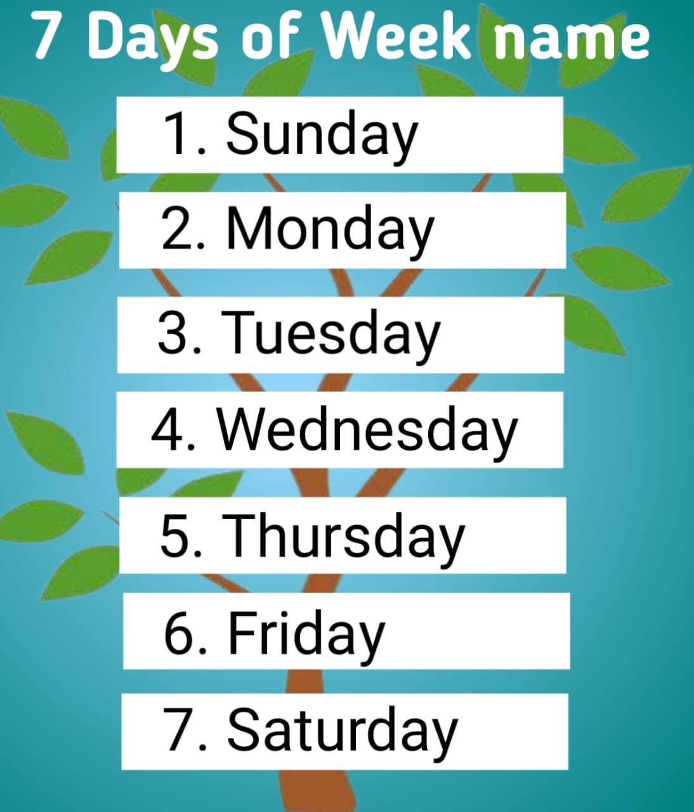

7 Day of Week Name in English and Hindi
A week is a cycle of seven days. And it is very important for everyone. For example, we know when we have to go to school now and when we don't have to go now because of the name of the week. In today's article, we will learn about the names of days of the week in English and Hindi.
Week Day Name in English
Each day has its own unique identity, and together they form the framework within which we organize our routines, work, rest, and leisure. The day's name is an essential part of our daily lives. We go to school daily according to the days and do many things according to the days.
- Sunday
- Monday
- Tuesday
- Wednesday
- Thursday
- Friday
- Saturday
Days Name in English and Hindi
| Days Name in English | Days Name in Hindi |
|---|---|
| Sunday | रविवार |
| Monday | सोमवार |
| Tuesday | मंगलवार |
| Wednesday | बुधवार |
| Thursday | गुरुवार |
| Friday | शुक्रवार |
| Saturday | शनिवार |
Days Name with Short Forms
| sr | days | Week Name in Short Forms |
|---|---|---|
| 1 | Sunday | Sun |
| 2 | Monday | Mon |
| 3 | Tuesday | Tue |
| 4 | Wednesday | Wed |
| 5 | Thursday | Thur |
| 6 | Friday | Fri |
| 7 | Saturday | Sat |
Days with Pronouciation
| Day in English | Pronouciation in English | Day in Hindi |
|---|---|---|
| Sunday | संडे | रविवार |
| Monday | मंडे | सोमवार |
| Tuesday | ट्यूसडे | मंगलवार |
| Wednesday | वेडनेसडे | बुधवार |
| Thursday | थर्सडे | गुरुवार |
| Friday | फ्राइडे | शुक्रवार |
| Saturday | सैटरडे | शनिवार |
Other Words Related to Week Days
| Today | आज (Aaj) |
| Tomorrow | कल (Kal) |
| Yesterday | कल (Kal) |
| Day | दिन (Din) |
| Night | रात (Raat) |
| Mornig | सुबह (Subah) |
| Evering | शाम (Shaam) |
| Afternoon | दोपहर (Dopahar) |
| Week | सप्ताह (Saptah) |
| Weekend | सप्ताहांत (Saptahant |
| Tonight | आज रात |
| Day After Tomorrow | परसों |
The Hostory of Name of Days
| Sunday | Take from the Sun |
| monday | Take from the planet Moon |
| Tuesday | Take from the planet Mars |
| Wednesday | Take from the planet Mercury |
| Thursday | Take from the planet Jupiter |
| Friday | Take from the planet Venus |
| Saturday | Take from the planet Saturn |
Week Name in Hindi with Pronouciation
| sr | Week Name | Week Name in Hindi | Pronouciation in Hindi |
|---|---|---|---|
| 1 | Sunday | रविवार | Ravivaar |
| 2 | Monday | सोमवार | Somavaar |
| 3 | Tuesday | मंगलवार | Mangalavaar |
| 4 | Wednesday | बुधवार | Budhavaar |
| 5 | Thursday | गुरुवार | Guruvaar |
| 6 | Friday | शुक्रवार | Shukravaar |
| 7 | Saturday | शनिवार | Shanivaar |
Weekdays Name in English and Hindi

| sr.no | Weekdays Name in English | Weekdays Name in Hindi |
|---|---|---|
| 1 | Monday | सोमवार |
| 2 | Tuesday | मंगलवार |
| 3 | Wednesday | बुधवार |
| 4 | Thursday | गुरुवार |
| 5 | Friday | शुक्रवार |
Weekend Day Name in English and Hindi
| sr.no | Weekend Name in English | Weekend Name in Hindi |
|---|---|---|
| 6 | Friday | शुक्रवार |
| 7 | Saturday | शनिवार |
Week in a Month
| Month | Days | Week |
|---|---|---|
| January | 31 Days | 4 Week + 3 Days |
| February | 28 Days (Regular Year) 29 Days (Leap Year) |
4 Week 4 Week + 1 Days |
| March | 31 Days | 4 Week + 3 Days |
| April | 30 Days | 4 Week + 2 Days |
| May | 31 Days | 4 Week + 3 Days |
| June | 30 Days | 4 Week + 2 Days |
| July | 31 Days | 4 Week + 3 Days |
| August | 31 Days | 4 Week + 3 Days |
| September | 30 Days | 4 Week + 2 Days |
| October | 31 Days | 4 Week + 3 Days |
| November | 30 Days | 4 Week + 2 Days |
| December | 31 Days | 4 Week + 3 Days |
FAQ's of Week Day name
How many days in a week?
There are 7 days in a week.
Is Monday a weekday or weekend?
Monday is a weekday.
What is the Hindi name of Wednesday?
The Hindi name of Wednesday is called बुधवार.
How many weeks are there in a month?
Between 4 weeks and 4.4 weeks.
When did Sunday holiday start?
It was first given on June 10, 1890 and since then every Sunday remains a weekly holiday.
How many weeks are there in a year?
52 weeks
What is the first day of the week?
Sunday
Which is the last day of the week?
Saturday